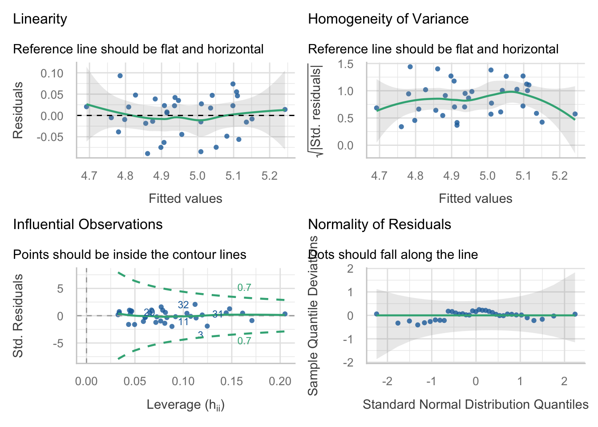
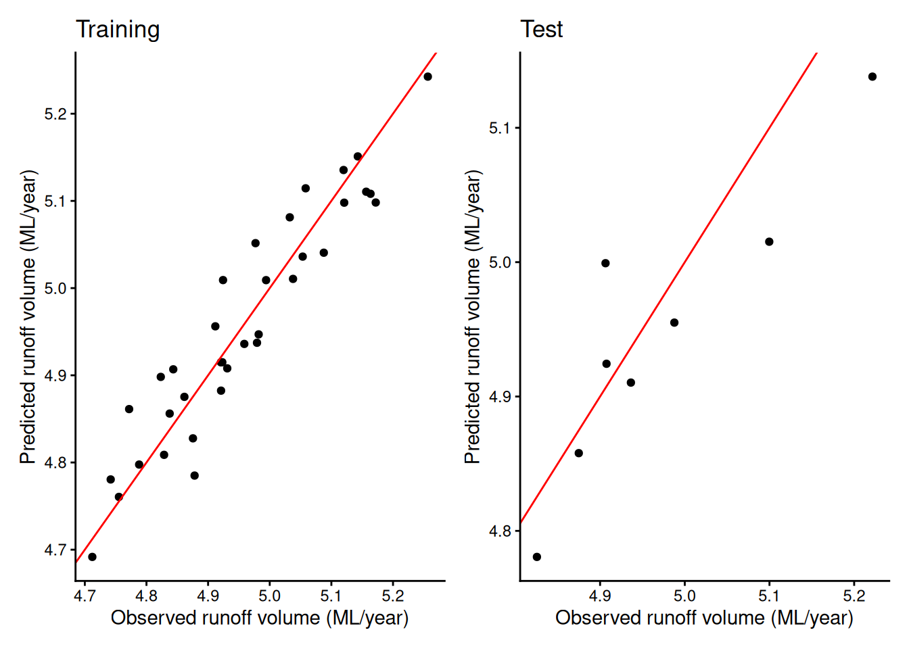
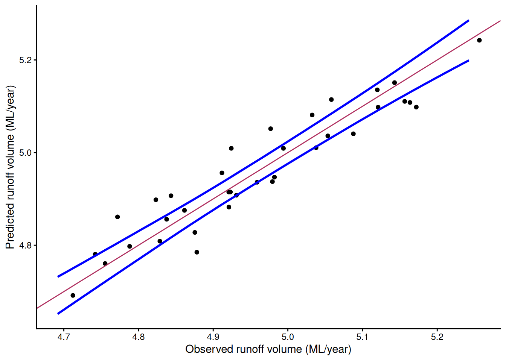
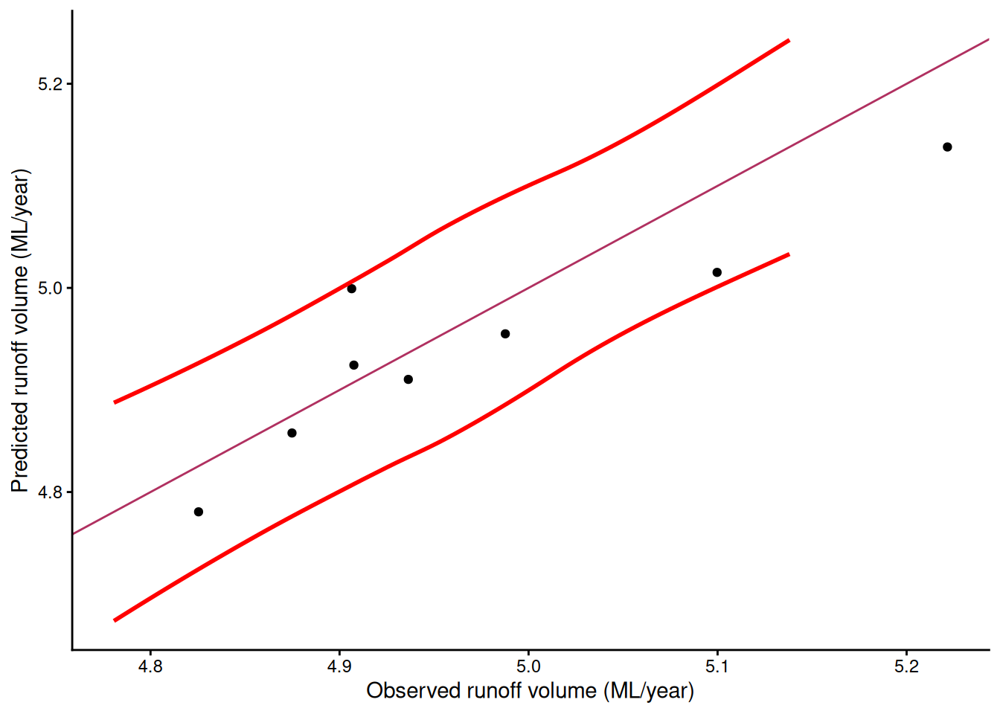
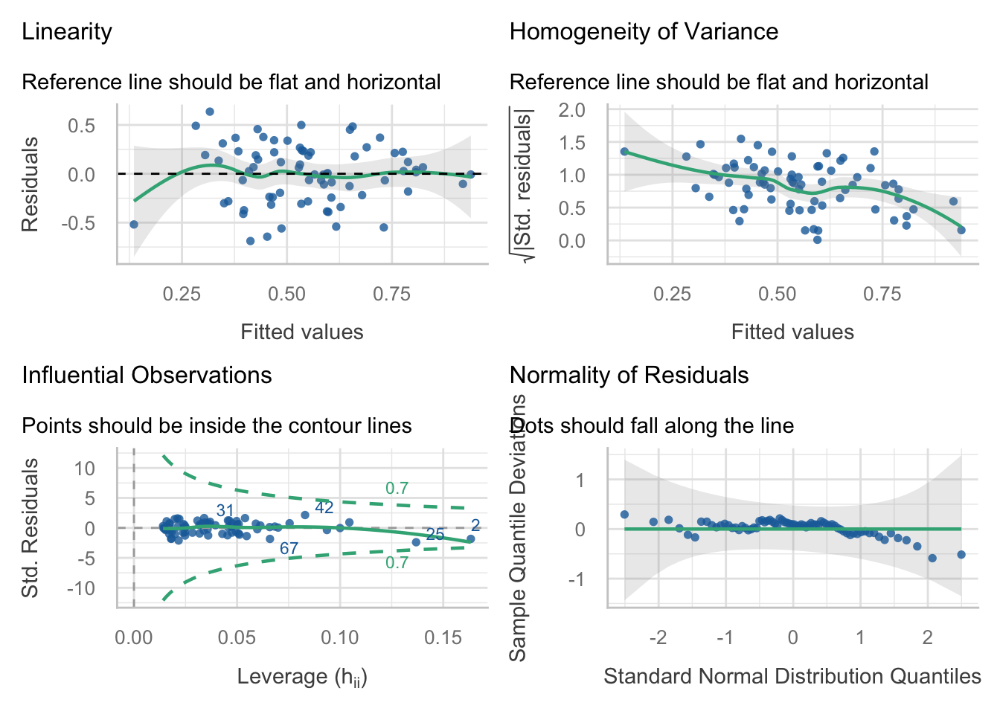
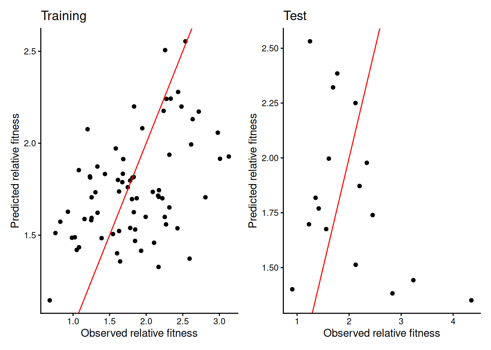
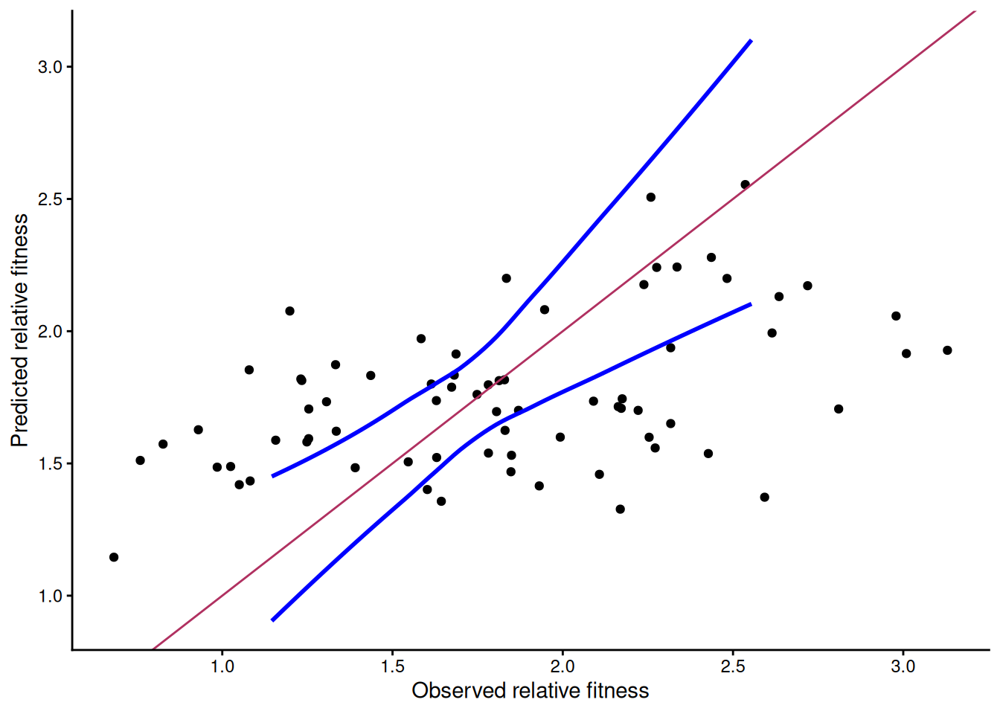
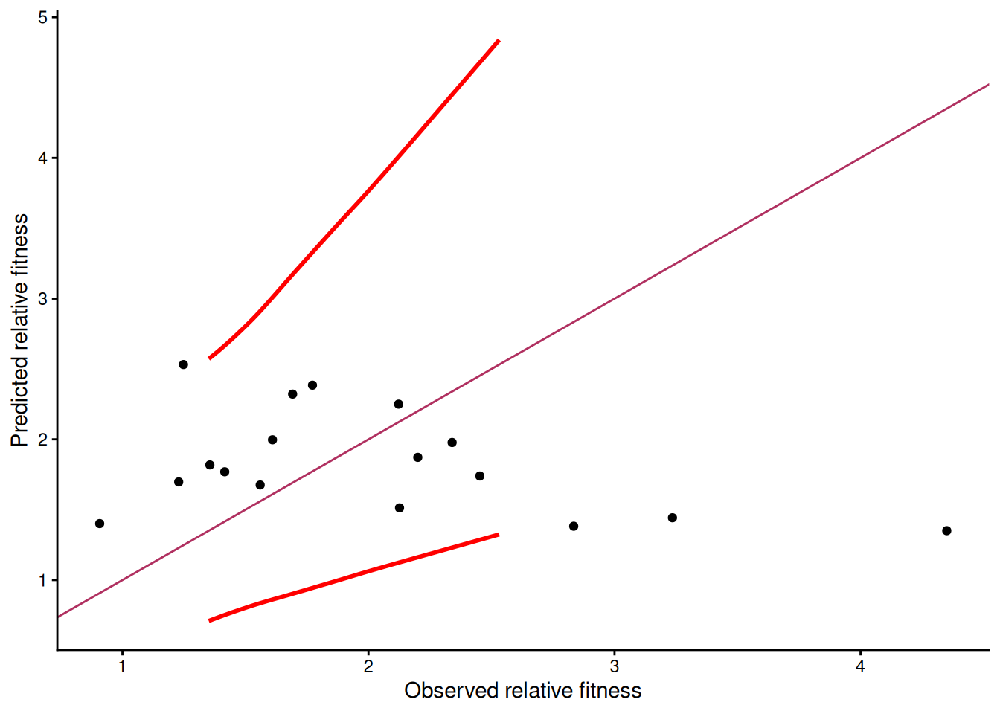

Welcome to week 9 - the last week of modelling!
This week’s lab will give you some practice testing how well our models predict new values.
Next week you will start on multivariate approaches.
Learning outcomes
This module links to the following unit learning outcomes:
LO3. demonstrate proficiency in the use or the statistical programming language R to apply an ANOVA and fit regression models to experimental data
LO5. interpret the output and understand conceptually how its derived of a regression, ANOVA and multivariate analysis that have been calculated by R
LO6. write statistical and modelling results as part of a scientific report
In this lab, we will learn how to:
Use the parsimonious models we produced last week to predict new values
Interpret key prediction quality metrics - do our models predict well?
Specific goals
By the end of this lab, you should be able to:
Preparation
Please work on these exercises by creating your own Quarto file. You are welcome to write your responses up in the style of a report.
Packages
This lab uses tidyverse, readxl, moments, psych, performance, caret, epiR. Install any you are missing by running the following in the console:
If a package is already installed, R will simply reinstall it — no harm done.
Downloads
| File | Used in | Download |
|---|---|---|
california_streamflow.xlsx |
Section 1 | Download |
plant_aridity.csv |
Section 2 | Download |
Save both files into a folder called data inside your project folder.
1. Making predictions with California streamflow (~45 min)
 Last week we found that precipitation at Lake Sabrina was not a significant predictor of runoff volume near Bishop, California.
Last week we found that precipitation at Lake Sabrina was not a significant predictor of runoff volume near Bishop, California.
Our Partial F-test between our full and reduced model resulted in a P-value< 0.05, so we failed to reject the null hypothesis. This told us that there was no significant difference between full and reduced models, so we selected the reduced model as it was less complex and therefore more parsimonious.
Our selected model was:
This week we will use this optimal model to predict new values of runoff volume near Bishop, California.
We will then assess the prediction quality by comparing observed to predicted values and calculating validation metrics to assess how well this model predicts new values.
Data recap
The california_streamflow dataset you were analysing contains 43 years of annual precipitation measurements (in mm) taken at (originally) 6 sites in the Owens Valley in California. You will focus on only 3 variables.
The data is in the california_streamflow.xlsx file.
Variables are as follows:
lake_sabrina: Precipitation recorded at Lake Sabrina (mm)pine_creek: Precipitation recorded at Big Pine Creek (mm),rock_creek: Precipitation recorded at Rock Creek (mm)runoff_volume: Stream runoff volume measured at a site near Bishop, California (ML/year). This will be the response variable.
Note the variables have already been log-transformed to increase normality of the residuals in the regressions.
Data source: Hollett, K.J., Danskin, F.M., McCaffrey, W.F., and Walti, S.L., 1991. Geology and water resources of Owens Valley, California. U.S. Geological Survey Water-Supply Paper 2370-H.
Exercise 1 - Making predictions
(i) Read the data in. What is the sample size? How do you think the sample size might impact the prediction quality?
(ii) Split the data into training and test subsets. We recommend an 80/20 training/test split.
(iii) Check the sample size and distribution of each subset. Does the sample size of each subset reflect the 80/20 split? Are the distributions (mean, median, min, max) similar between the two subsets?
(iv) Fit the linear model to the training subset using runoff_volume as the response, and pine_creek and rock_creek as the predictor variables.
(v) Check whether assumptions have been met for your trained model. Have the assumptions been met? or do we need to explore transformation?
(vi) Use the model to predict using the training set and then using the test set.
(vii) Have a look at what the predict() function has produced using the head() function. We should see a new column at the end of both dataframes containing the predictions from the model.
Solution
(i) Read the data in. What is the sample size? How do you think the sample size might impact the prediction quality?
Read in the data
Rows: 43
Columns: 4
$ lake_sabrina <dbl> 1.958717, 2.087881, 1.981175, 2.054169, 2.102934, 2.1568…
$ pine_creek <dbl> 2.017618, 2.282781, 2.383471, 2.451719, 2.618086, 2.3532…
$ rock_creek <dbl> 2.275823, 2.450548, 2.491194, 2.585246, 2.706948, 2.3159…
$ runoff_volume <dbl> 4.825412, 4.920867, 4.911735, 4.924242, 5.120841, 4.9210…From the glimpse() or str() function, we can see that the sample size (number of rows in this case) is 43.
Generally, the more observations you use to train the model, the more accurate the predictions are expected to be. Our 43 observations is quite a small sample size and when we go to split this into training and test subsets, the training set will be smaller, so we need to understand our prediction quality may not be as good compared to a larger sample size.
We will continue with splitting here, but another validation method we could use is Leave-One-Out Cross-validation.
(ii) Split the data into training and test subsets. We recommend an 80/20 training/test split.
(iii) Check the sample size and distribution of each subset. Does the sample size of each subset reflect the 80/20 split? Are the distributions (mean, median, min, max) similar between the two subsets?
tibble [35 × 4] (S3: tbl_df/tbl/data.frame)
$ lake_sabrina : num [1:35] 2.09 1.98 2.05 2.1 2.16 ...
$ pine_creek : num [1:35] 2.28 2.38 2.45 2.62 2.35 ...
$ rock_creek : num [1:35] 2.45 2.49 2.59 2.71 2.32 ...
$ runoff_volume: num [1:35] 4.92 4.91 4.92 5.12 4.92 ...tibble [8 × 4] (S3: tbl_df/tbl/data.frame)
$ lake_sabrina : num [1:8] 2.13 1.96 2.09 2.19 2.1 ...
$ pine_creek : num [1:8] 2.56 2.02 2.3 2.38 2.69 ...
$ rock_creek : num [1:8] 2.52 2.28 2.29 2.37 2.76 ...
$ runoff_volume: num [1:8] 5.1 4.83 4.87 4.94 5.22 ... lake_sabrina pine_creek rock_creek runoff_volume
Min. :1.572 Min. :2.012 Min. :2.043 Min. :4.712
1st Qu.:1.907 1st Qu.:2.297 1st Qu.:2.296 1st Qu.:4.853
Median :2.050 Median :2.440 Median :2.451 Median :4.931
Mean :2.025 Mean :2.461 Mean :2.444 Mean :4.958
3rd Qu.:2.140 3rd Qu.:2.631 3rd Qu.:2.588 3rd Qu.:5.056
Max. :2.483 Max. :3.042 Max. :2.800 Max. :5.257 lake_sabrina pine_creek rock_creek runoff_volume
Min. :1.566 Min. :2.018 Min. :2.276 Min. :4.825
1st Qu.:2.056 1st Qu.:2.322 1st Qu.:2.348 1st Qu.:4.899
Median :2.116 Median :2.358 Median :2.471 Median :4.922
Mean :2.053 Mean :2.395 Mean :2.461 Mean :4.970
3rd Qu.:2.170 3rd Qu.:2.544 3rd Qu.:2.524 3rd Qu.:5.016
Max. :2.222 Max. :2.689 Max. :2.765 Max. :5.222 Looks good, 35 obs in training set, 8 in test set. This is what we are after.
We can see from the output of the summary() function that the distribution of each variable is similar between training and test subsets.
Now we can fit the model to the steam_train subset.
(iv) Fit the linear model to the training subset using runoff_volume as the response, and pine_creek and rock_creek as the predictor variables.
We fit the model on training set ONLY as we do not want the model to be built using any of the test set. It needs to remain unseen by the model. That way we can gauge how well our model can predict new values.
(v) Check whether assumptions have been met for your trained model. Have the assumptions been met? or do we need to explore transformation?

pine_creek rock_creek
5.395163 5.395163 Collinearity: VIF is approx 5, so collinearity could be an issue, but it has not exceeded the less conservative accepted threshold of 10, so we don’t need to remove anything.
Linear relationship: Points are evenly scattered in the plot, line is somewhat flat
Independence: As far as we know, there is no issue.
Normality: Points mostly follow the line, so all good
Equal variances: No fanning, points evenly scattered.
Outliers: Leverage plot indicates no points outside Cook’s distance so no issues here.
Assumptions look ok, let’s continue!
(vi) Use the model to predict using the training set and then using the test set.
Then use model to predict
(vii) Have a look at what the predict() function has produced using the head() function. We should see a new column at the end of both dataframes containing the predictions from the model.
# A tibble: 6 × 5
lake_sabrina pine_creek rock_creek runoff_volume pred
<dbl> <dbl> <dbl> <dbl> <dbl>
1 2.09 2.28 2.45 4.92 4.91
2 1.98 2.38 2.49 4.91 4.96
3 2.05 2.45 2.59 4.92 5.01
4 2.10 2.62 2.71 5.12 5.10
5 2.16 2.35 2.32 4.92 4.88
6 2.28 2.37 2.39 4.92 4.91# A tibble: 6 × 5
lake_sabrina pine_creek rock_creek runoff_volume pred
<dbl> <dbl> <dbl> <dbl> <dbl>
1 2.13 2.56 2.52 5.10 5.02
2 1.96 2.02 2.28 4.83 4.78
3 2.09 2.30 2.29 4.87 4.86
4 2.19 2.38 2.37 4.94 4.91
5 2.10 2.69 2.76 5.22 5.14
6 2.22 2.33 2.53 4.99 4.96Exercise 2 - How well does our model predict new values?
(i) Plot observed vs predicted for the training and test subsets. Do the points follow the 1:1 line? Do the points sit close to the line, or are they scattered about the plot area?
(ii) Overlay the confidence interval onto the training predicted vs observed plot. What does this tell us?
(iii) Overlay the prediction interval onto the predicted vs observed plot produced using the test subset. What does this tell us?
(iv) Calculate the mean error for predictions obtained with the training and test subsets. Are they similar to each other? Is the Mean Error close to 0?
(v) Calculate the Mean Absolute Error. Are the values close to zero? what does this tell us?
(vi) Calculate the Root Mean Square Error. Are the values close to zero? what additional information can this tell us about the accuracy of our predictions?
HINT: you can use the RMSE() function from the caret package
(vii) Calculate the r2 value. What does this metric tell us about our model? Is the r2 good for our predictions?
HINT: you can either calculate this by squaring the correlation coefficient between observed and predicted, or you can use the R2() function from the caret package.
(viii) Calculate Lin’s Correlation Coefficient for our predictions. What does this metric tell us about our model? How is this different from our r2 value? Do our values indicate strong agreement between observed and predicted for our training and test predictions?
HINT: you can calculate the LCCC via the epiR package
(ix) Create a summary table of the metrics above and use it to make a conclusion about the prediction quality of our model.
Solution
(i) Plot observed vs predicted for the training and test subsets. Do the points follow the 1:1 line? Do the points sit close to the line, or are they scattered about the plot area?
Show the code
p1 <- ggplot(stream_train, aes(runoff_volume, pred)) +
geom_point() +
geom_abline(intercept = 0, slope = 1, color = "red") +
labs(x = "Observed runoff volume (ML/year)", y = "Predicted runoff volume (ML/year)",
title = "Training") +
theme_classic()
p2 <- ggplot(stream_test, aes(runoff_volume, pred)) +
geom_point() +
geom_abline(intercept = 0, slope = 1, color = "red") +
labs(x = "Observed runoff volume (ML/year)", y = "Predicted runoff volume (ML/year)",
title = "Test") +
theme_classic()
p1 + p2
For both training and test plots, we see the points follow the 1:1 line, indicating agreement between observed and predicted.
If it were perfect prediction, we would expect the points to fit the 1:1 line exactly. We see our points are scattered a bit further away from the line, so we expect to see a moderate fit indicated by our metrics.
(ii) Overlay the confidence interval onto the training predicted vs observed plot. What does this tell us?
# Calculate the CI for the training set
train_ci <- predict(stream_train_fit, newdata = stream_train, interval = "confidence")
ggplot(stream_train, aes(runoff_volume, pred)) +
geom_point() +
geom_smooth(data = train_ci, aes(fit, lwr), color = "blue", se = F) +
geom_smooth(data = train_ci, aes(fit, upr), color = "blue", se = F) +
geom_abline(intercept = 0, slope = 1, color = "maroon") + # 1:1 line
labs(x = "Observed runoff volume (ML/year)", y = "Predicted runoff volume (ML/year)") +
theme_classic()`geom_smooth()` using method = 'loess' and formula = 'y ~ x'
`geom_smooth()` using method = 'loess' and formula = 'y ~ x'
Plotting the Confidence interval tells us that given the parameters, we are 95% certain that the mean response lies within the CI. The closer the CI is to the line, the better our model is fitted to the data.
If the CI widens in certain regions of the plot, it may indicate model instabilty or a lack of points in that region. We can see in our plot that the CI does widen slightly towards the lower and upper regions of the plot area.
NOTE: we only overlay the CI onto the plot produced for the training set as this is the data that our model was fitted to. The CI can only give us information about how well the model is estimating the true mean, not how well the model is predicting.
(iii) Overlay the prediction interval onto the predicted vs observed plot produced using the test subset. What does this tell us?
test_pi <- predict(stream_train_fit, newdata = stream_test, interval = "prediction")
ggplot(stream_test, aes(runoff_volume, pred)) +
geom_point() +
geom_smooth(data = test_pi, aes(fit, lwr), color = "red", se = F) +
geom_smooth(data = test_pi, aes(fit, upr), color = "red", se = F) +
geom_abline(intercept = 0, slope = 1, color = "maroon") + # 1:1 line +
labs(x = "Observed runoff volume (ML/year)", y = "Predicted runoff volume (ML/year)") +
theme_classic() `geom_smooth()` using method = 'loess' and formula = 'y ~ x'
`geom_smooth()` using method = 'loess' and formula = 'y ~ x'
The predictions obtained using the test data shows us how well the model can predict new values. This is possible because the model was only fitted with the training data, not the test data.
We overlay the prediction interval onto the predicted vs observed plot for the test set, so we can see how many predictions fell within the prediction interval. At a 95% PI, we expect 95% of points to fall within the range. Fewer points falling within the range would indicate that the model is not very precise.
In our plot, we can see that all of the points lie within the PI, which is good. The PI tells us likely range of where predictions will lie and in this case, as all predictions lie within the range, the model is looking like it predicts with a decent amount of precision.
(iv) Calculate the mean error for predictions obtained with the training and test subsets. Are they similar to each other? Is the Mean Error close to 0?
[1] -6.317367e-16[1] 0.02236565Mean error is close to zero for both and the values are similar between training and test subsets, indicating a stable model (no evidence of overfitting).
Close to zero tells us the model isn’t over- or under-predicting.
Positive values indicate the model is over-predicting
Negative values indicate under-prediction.
From our predicted vs observed plot, we can see most of the points sit under the 1:1 line, indicating that the model is overpredicting
(v) Calculate the Mean Absolute Error. Are the values close to zero? what does this tell us?
[1] 0.03775411[1] 0.04976594The MAE is close to zero for predictions obtained for the test and training sets. This tells us that the prediction error is low overall. Mean Error gives us direction, but MAE can give us a better idea of the magnitude of the error.
(vi) Calculate the Root Mean Square Error. Are the values close to zero? what additional information can this tell us about the accuracy of our predictions?
HINT: you can use the RMSE() function from the caret package
Loading required package: lattice
Attaching package: 'caret'The following object is masked from 'package:purrr':
lift[1] 0.04553841[1] 0.05815502if RMSE is much larger than MAE, then model is making huge mistakes. In our case, the values aren’t too different to the MAE and they care close to zero so it tells us the model is predicting well. We can also see the values are similar between training and test predictions, indicating a stable model.
(vii) Calculate the r2 value. What does this metric tell us about our model? Is the r2 good for our predictions?
HINT: you can either calculate this by squaring the correlation coefficient between observed and predicted, or you can use the R2() function from the caret package.
Option 1: squaring the correlation coefficient:
[1] 0.8898066[1] 0.8128205Option 2: R2() function from the caret package.
[1] 0.8898066[1] 0.8128205The r2 tells us about the strength of the relationship between observed and predicted values. The closer to 1, the better.
In this case, we see that the r2 for the training set is 0.89 and the test set is 0.81.
Both values are close to 1, indicating a strong relationship.
The r2 for the training set is higher than the test set, suggesting the model may be overfitted and may not predict new values too well.
This is different to our narrative with our error metrics so far, which highlights the importance of not relying on a single metric to make decisions.
(viii) Calculate Lin’s Correlation Coefficient for our predictions. What does this metric tell us about our model? How is this different from our r2 value? Do our values indicate strong agreement between observed and predicted for our training and test predictions?
HINT: you can calculate the LCCC via the epiR package
Loading required package: survival
Attaching package: 'survival'The following object is masked from 'package:caret':
clusterPackage epiR 2.0.92 is loadedType help(epi.about) for summary informationType browseVignettes(package = 'epiR') to learn how to use epiR for applied epidemiological analyses[1] 0.9416906[1] 0.8679682LCCC tells us about the strength of agreement between predicted and observed, or how well the points fit the 1:1 line in our plot. This is a bit different between our r2 which instead tells us about the strength of the linear relationship between predicted and observed, and it may not always follow the 1:1 line.
The LCCC for the predictions obtained using the training set is 0.94 and the LCCC for the predictions obtained using the test set is 0.87.
Both of these values indicate a strong level of agreement between predicted and observed.
(ix) Create a summary table of the metrics above and use it to make a conclusion about the prediction quality of our model.
training <- c(mean(stream_train$runoff_volume - stream_train$pred) |> round(3),
mean(abs(stream_train$runoff_volume - stream_train$pred)) |> round(3),
RMSE(stream_train$runoff_volume, stream_train$pred) |> round(3),
R2(stream_train$runoff_volume, stream_train$pred) |> round(3),
epi.ccc(stream_train$runoff_volume, stream_train$pred)$rho.c$est |> round(3))
test <- c(mean(stream_test$runoff_volume - stream_test$pred) |> round(3),
mean(abs(stream_test$runoff_volume - stream_test$pred)) |> round(3),
RMSE(stream_test$runoff_volume, stream_test$pred) |> round(3),
R2(stream_test$runoff_volume, stream_test$pred) |> round(3),
epi.ccc(stream_test$runoff_volume, stream_test$pred)$rho.c$est |> round(3))
table <- data.frame(training, test)
colnames(table)<- c("Training", "Test")
labels <- c("Mean Error", "MAE", "RMSE", "R^2^", "LCCC")| Mean Error | MAE | RMSE | R2 | LCCC | |
|---|---|---|---|---|---|
| Training | 0.000 | 0.038 | 0.046 | 0.890 | 0.942 |
| Test | 0.022 | 0.050 | 0.058 | 0.813 | 0.868 |
As we can see from Table 1, The errors are close to zero and the r2 and LCCC values are close to 1, indicating that our model is predicting new values with a good level of accuracy and precision.
There is a difference between metrics between the training and test subsets, with the training predictions having a lower error and higher r2 and LCCC values compared to the test predictions. This suggests that our model may be overfitted to the training data, and may not predict new values as well as it predicts the training data.
Before we move on, now is a good time to take a 5-minute break.
2. Making predictions with the plant aridity data (~45 min)
We used this dataset last week as an example of model selection.
As identified by the partial F-test and stepwise regression last week, we found that the reduced model was most appropriate, which includes growth rate and chlorogenic_acid as the predictors. This reduction in predictors made our model more significant, though it only explained 7% of variation in log(rel_fitness).
Although the model does not explain much variation, we will use this data to get some practice making predictions, and to see what happens when we use a sub-optimal model.
Data recap
This dataset examines the adaptation of invasive capeweed (Arctotheca calendula) populations to aridity gradients across southern Australia. A common garden experiment was conducted from 2018-2019 with populations sourced from varying aridity levels, subjecting them to wet and dry treatments to measure traits related to drought escape, avoidance, and tolerance.
The dataset has been reduced to contain only the variables you will need to fit in the model. Furthermore, only the samples that received the wet treatment will be used for this analysis (n = 89 observations).
The dataset is in the plant_aridity.csv file.
Variables are as follows:
growth_rate: growth rate measured as differences in # of rosette leaves between zero and eight weeks after transplantingdays_to_flower: days to first flowering since transplant (days)specific_leaf_area: specific leaf area as [leaf area (cm2) / dry mass (g)]root_shoot_ratio: root-to-shoot ratio [root mass/shoot mass]chlorogenic_acid: concentration of chlorogenic acid (mg/g frwt sample)rel_fitness: Relative fitness of each plant, seed count divided by the mean seed count
rel_fitness will be the response variable in your models, and the other variables will be the predictor variables.
Data source: Uesugi, Akane (2022). Data from: Multivariate selection mediated by aridity predicts divergence of drought resistant traits along natural aridity gradients of an invasive weed [Dataset]. Dryad. https://doi.org/10.5061/dryad.tht76hf17
Paper: Carvalho C, Davis R, Connallon T, Gleadow RM, Moore JL, Uesugi A. Multivariate selection mediated by aridity predicts divergence of drought-resistant traits along natural aridity gradients of an invasive weed. New Phytol. 2022 May;234(3):1088-1100. doi: 10.1111/nph.18018.
Exercise 3 - Making predictions
(i) Read the data in. What is the sample size? How do you think the sample size might impact the prediction quality?
(ii) Before we do any splitting, make sure you log-transform relative_fitness by creating a new variable within the plant_aridity dataframe, as this is what we found was important in our model last week.
(iii) Split the data into training and test subsets. We recommend an 80/20 training/test split.
(iv) Check the sample size and distribution of each subset. Does the sample size of each subset reflect the 80/20 split? Are the distributions (mean, median, min, max) similar between the two subsets?
(v) Fit the linear model to the training subset using log(rel_fitness) as the response, and growth_rate and chlorogenic_acid as the predictor variables.
(vi) Check whether assumptions have been met for your trained model. Have the assumptions been met? or do we need to explore transformation?
(vii) Use the model to predict using the training set and then using the test set.
(viii) Have a look at what the predict() function has produced using the head() function. We should see a new column at the end of both dataframes containing the predictions from the model.
Solution
(i) Read the data in. What is the sample size? How do you think the sample size might impact the prediction quality?
Read in the data
Rows: 89
Columns: 6
$ growth_rate <dbl> 0.22067290, 1.43609443, 0.30935172, 0.22067290, 1.6…
$ days_to_flower <dbl> -0.4145824, -0.6269022, -0.2022626, 0.8593366, -0.8…
$ root_shoot_ratio <dbl> 1.20655643, 1.20445683, 0.96082859, 0.65232362, 0.6…
$ specific_leaf_area <dbl> 0.247613399, 0.489085984, 0.792795063, 0.460665270,…
$ chlorogenic_acid <dbl> 0.06142098, 2.81363621, -0.31049431, -1.72474580, -…
$ rel_fitness <dbl> 1.2540924, 0.6817035, 1.3553394, 2.4363840, 1.60986…From the glimpse() or str() function, we can see that the sample size (number of rows in this case) is 89. This is a much better sample size than 43.
(ii) Before we do any splitting, make sure you log-transform relative_fitness by creating a new variable within the plant_aridity dataframe, as this is what we found was important in our model last week.
(iii) Split the data into training and test subsets. We recommend an 80/20 training/test split.
(iv) Check the sample size and distribution of each subset. Does the sample size of each subset reflect the 80/20 split? Are the distributions (mean, median, min, max) similar between the two subsets?
'data.frame': 72 obs. of 7 variables:
$ growth_rate : num 0.221 1.436 0.221 0.221 1.613 ...
$ days_to_flower : num -0.415 -0.627 0.859 -0.839 0.647 ...
$ root_shoot_ratio : num 1.207 1.204 0.652 0.571 0.48 ...
$ specific_leaf_area: num 0.248 0.489 0.461 -0.103 -0.294 ...
$ chlorogenic_acid : num 0.0614 2.8136 -1.7247 0.0288 1.3244 ...
$ rel_fitness : num 1.254 0.682 2.436 2.163 1.848 ...
$ log_rel_fitness : num 0.226 -0.383 0.891 0.771 0.614 ...'data.frame': 17 obs. of 7 variables:
$ growth_rate : num 1.7856 0.4815 -0.0401 0.132 0.0485 ...
$ days_to_flower : num 0.647 -0.415 0.859 -1.901 0.647 ...
$ root_shoot_ratio : num -0.639 -0.75 -0.328 -0.826 -0.101 ...
$ specific_leaf_area: num -0.212 0.347 0.359 -0.39 -0.432 ...
$ chlorogenic_acid : num 1.8815 0.00441 -2.0685 0.15035 1.23252 ...
$ rel_fitness : num 4.35 2.453 1.772 1.56 0.908 ...
$ log_rel_fitness : num 1.47 0.897 0.572 0.445 -0.097 ... growth_rate days_to_flower root_shoot_ratio specific_leaf_area
Min. :-1.5164 Min. :-1.90082 Min. :-0.9712 Min. :-2.39281
1st Qu.: 0.1776 1st Qu.:-0.83922 1st Qu.:-0.7861 1st Qu.:-0.24240
Median : 0.6119 Median :-0.20226 Median :-0.6350 Median : 0.07584
Mean : 0.5564 Mean : 0.01006 Mean :-0.4297 Mean : 0.07279
3rd Qu.: 1.1127 3rd Qu.: 0.64702 3rd Qu.:-0.2699 3rd Qu.: 0.49422
Max. : 1.6969 Max. : 2.98253 Max. : 1.2066 Max. : 2.44174
chlorogenic_acid rel_fitness log_rel_fitness
Min. :-2.19566 Min. :0.6817 Min. :-0.3832
1st Qu.:-0.43865 1st Qu.:1.3343 1st Qu.: 0.2884
Median : 0.05840 Median :1.8210 Median : 0.5994
Mean : 0.04882 Mean :1.8289 Mean : 0.5494
3rd Qu.: 0.71500 3rd Qu.:2.2550 3rd Qu.: 0.8131
Max. : 2.81364 Max. :3.1298 Max. : 1.1410 growth_rate days_to_flower root_shoot_ratio specific_leaf_area
Min. :-1.34425 Min. :-1.9008 Min. :-0.9722 Min. :-0.43195
1st Qu.:-0.04015 1st Qu.:-0.4146 1st Qu.:-0.6389 1st Qu.:-0.21161
Median : 0.30935 Median : 0.6470 Median :-0.4631 Median : 0.03534
Mean : 0.43547 Mean : 0.3098 Mean :-0.3573 Mean : 0.13271
3rd Qu.: 0.83099 3rd Qu.: 0.6470 3rd Qu.:-0.3281 3rd Qu.: 0.42179
Max. : 1.78559 Max. : 2.9825 Max. : 0.9608 Max. : 0.79280
chlorogenic_acid rel_fitness log_rel_fitness
Min. :-2.1821 Min. :0.9076 Min. :-0.09696
1st Qu.:-0.9356 1st Qu.:1.4158 1st Qu.: 0.34773
Median :-0.3105 Median :1.7724 Median : 0.57235
Mean :-0.2064 Mean :2.0265 Mean : 0.63119
3rd Qu.: 0.9501 3rd Qu.:2.3400 3rd Qu.: 0.85014
Max. : 1.8815 Max. :4.3504 Max. : 1.47027 Looks good, 72 obs in training set, 17 in test set. This is what we are after.
We can see from the output of the summary() function that the distribution of each variable is similar between training and test subsets. This dataset contains all of the variables we used last week, but we only need to check the distributions of log(rel_fitness), growth_rate and chlorogenic_acid as these are the variables we will be using in our model.
Now we can fit the model to the plant_train subset.
(v) Fit the linear model to the training subset using log(rel_fitness) as the response, and growth_rate and chlorogenic_acid as the predictor variables.
We fit the model on training set ONLY as we do not want the model to be built using any of the test set. It needs to remain unseen by the model. That way we can gauge how well our model can predict new values.
(vi) Check whether assumptions have been met for your trained model. Have the assumptions been met? or do we need to explore transformation?

growth_rate chlorogenic_acid
1.004839 1.004839 Collinearity: VIF is 1 for both growth_rate and chlorogenic_acid, so collinearity is not an issue.
Linear relationship: Points are evenly scattered in the plot, line is somewhat flat
Independence: As far as we know, there is no issue.
Normality: Points mostly follow the line, so all good
Equal variances: No fanning, points evenly scattered. Potential sloping trend, so interpret model with caution.
Outliers: Leverage plot indicates no points outside Cook’s distance so no issues here.
Assumptions look ok, let’s continue!
(vii) Use the model to predict using the training set and then using the test set.
(viii) Have a look at what the predict() function has produced using the head() function. We should see a new column at the end of both dataframes containing the predictions from the model.
growth_rate days_to_flower root_shoot_ratio specific_leaf_area
1 0.22067290 -0.4145824 1.2065564 0.2476134
2 1.43609443 -0.6269022 1.2044568 0.4890860
4 0.22067290 0.8593366 0.6523236 0.4606653
6 0.22067290 -0.8392221 0.5709775 -0.1033320
7 1.61345208 0.6470167 0.4800367 -0.2939835
8 0.04853165 1.9209357 0.4633325 -0.6512270
chlorogenic_acid rel_fitness log_rel_fitness pred
1 0.06142098 1.2540924 0.2264121 0.5340569
2 2.81363621 0.6817035 -0.3831605 0.1357157
4 -1.72474580 2.4363840 0.8905150 0.8237292
6 0.02882912 2.1628959 0.7714480 0.5393425
7 1.32438765 1.8478601 0.6140283 0.3842395
8 -0.37759474 1.2306966 0.2075804 0.5984561 growth_rate days_to_flower root_shoot_ratio specific_leaf_area
49 1.78559333 0.6470167 -0.6388931 -0.2116088
65 0.48149297 -0.4145824 -0.7497444 0.3473387
25 -0.04014717 0.8593366 -0.3281318 0.3589956
74 0.13199407 -1.9008212 -0.8262325 -0.3899548
18 0.04853165 0.6470167 -0.1005979 -0.4319468
89 -1.34424753 0.6470167 -0.9722212 0.4217895
chlorogenic_acid rel_fitness log_rel_fitness pred
49 1.881502262 4.3503976 1.47026724 0.3006876
65 0.004408809 2.4525190 0.89711565 0.5536034
25 -2.068500271 1.7724290 0.57235093 0.8691772
74 0.150354562 1.5598505 0.44458997 0.5161319
18 1.232523844 0.9075934 -0.09695883 0.3373344
89 -0.545461657 1.4158457 0.34772699 0.5706752Exercise 4 - How well does our model predict new values?
(i) Before we continue, we will need to backtransform our predicted and observed values for the training and test subsets by exponentiating them.
(ii) Plot observed vs predicted for the training and test subsets. Do the points follow the 1:1 line? Do the points sit close to the line, or are they scattered about the plot area?
(iii) Calculate the confidence interval and backtransform it. Overlay the backtransformed confidence interval onto the training predicted vs observed plot. What does this tell us?
(iv) Calculate the prediction interval and ensure you backtransform it. Overlay the prediction interval onto the predicted vs observed plot produced using the test subset. What does this tell us?
(v) Calculate the mean error for predictions obtained with the training and test subsets. Are they similar to each other? Is the Mean Error close to 0?
(vi) Calculate the Mean Absolute Error. Are the values close to zero? what does this tell us?
(vii) Calculate the Root Mean Square Error. Are the values close to zero? what additional information can this tell us about the accuracy of our predictions?
HINT: you can use the RMSE() function from the caret package
(viii) Calculate the r2 value. What does this metric tell us about our model? Is the r2 good for our predictions?
HINT: you can either calculate this by squaring the correlation coefficient between observed and predicted, or you can use the R2() function from the caret package.
(ix) Calculate Lin’s Correlation Coefficient for our predictions. Do our values indicate strong agreement between observed and predicted for our training and test predictions?
HINT: you can calculate the LCCC via the epiR package
(x) Create a summary table of the metrics above and use it to make a conclusion about the prediction quality of our model.
Solution
(i) Before we continue, we will need to backtransform our predicted and observed values for the training and test subsets by exponentiating them.
This allows us to interpret the error metrics on the original scale of the response variable, rather than the log scale.
growth_rate days_to_flower root_shoot_ratio specific_leaf_area
1 0.22067290 -0.4145824 1.2065564 0.2476134
2 1.43609443 -0.6269022 1.2044568 0.4890860
4 0.22067290 0.8593366 0.6523236 0.4606653
6 0.22067290 -0.8392221 0.5709775 -0.1033320
7 1.61345208 0.6470167 0.4800367 -0.2939835
8 0.04853165 1.9209357 0.4633325 -0.6512270
chlorogenic_acid rel_fitness log_rel_fitness pred exp_log_rel_fitness
1 0.06142098 1.2540924 0.2264121 0.5340569 1.2540924
2 2.81363621 0.6817035 -0.3831605 0.1357157 0.6817035
4 -1.72474580 2.4363840 0.8905150 0.8237292 2.4363840
6 0.02882912 2.1628959 0.7714480 0.5393425 2.1628959
7 1.32438765 1.8478601 0.6140283 0.3842395 1.8478601
8 -0.37759474 1.2306966 0.2075804 0.5984561 1.2306966
exp_pred
1 1.705839
2 1.145356
4 2.278983
6 1.714879
7 1.468497
8 1.819308 growth_rate days_to_flower root_shoot_ratio specific_leaf_area
49 1.78559333 0.6470167 -0.6388931 -0.2116088
65 0.48149297 -0.4145824 -0.7497444 0.3473387
25 -0.04014717 0.8593366 -0.3281318 0.3589956
74 0.13199407 -1.9008212 -0.8262325 -0.3899548
18 0.04853165 0.6470167 -0.1005979 -0.4319468
89 -1.34424753 0.6470167 -0.9722212 0.4217895
chlorogenic_acid rel_fitness log_rel_fitness pred exp_log_rel_fitness
49 1.881502262 4.3503976 1.47026724 0.3006876 4.3503976
65 0.004408809 2.4525190 0.89711565 0.5536034 2.4525190
25 -2.068500271 1.7724290 0.57235093 0.8691772 1.7724290
74 0.150354562 1.5598505 0.44458997 0.5161319 1.5598505
18 1.232523844 0.9075934 -0.09695883 0.3373344 0.9075934
89 -0.545461657 1.4158457 0.34772699 0.5706752 1.4158457
exp_pred
49 1.350787
65 1.739510
25 2.384948
74 1.675534
18 1.401208
89 1.769461Notice we are backtransforming rel_fitness and not using the original rel_fitness variable.
(ii) Plot observed vs predicted for the training and test subsets. Do the points follow the 1:1 line? Do the points sit close to the line, or are they scattered about the plot area?
Show the code
p1 <- ggplot(plant_train, aes(exp_log_rel_fitness, exp_pred)) +
geom_point() +
geom_abline(intercept = 0, slope = 1, color = "red") +
labs(x = "Observed relative fitness", y = "Predicted relative fitness",
title = "Training") +
theme_classic()
p2 <- ggplot(plant_test, aes(exp_log_rel_fitness, exp_pred)) +
geom_point() +
geom_abline(intercept = 0, slope = 1, color = "red") +
labs(x = "Observed relative fitness", y = "Predicted relative fitness",
title = "Test") +
theme_classic()
p1 + p2
In the training plot, we can see the points are quite scattered about the plot area, but follow the 1:1 line, indicating there is potentially weak agreement between observed and predicted.
In the test plot, we see only a few points seem to weakly follow the 1:1 line, but there are also other points sitting further away from the line. The points aren’t following the line closely, and almost follow a horizontal trend, indicating a very poor relationship between observed and predicted.
We can get alot of information from the plots, but we still need to verify our interpretations with metrics.
(iii) Calculate the confidence interval and backtransform it. Overlay the backtransformed confidence interval onto the training predicted vs observed plot. What does this tell us?
# Calculate the CI for the training set
train_ci <- predict(plant_train_fit, newdata = plant_train, interval = "confidence")
# BACKTRANSFORM THE CI
exp_train_ci <- as.data.frame(exp(train_ci))
ggplot(plant_train, aes(exp_log_rel_fitness, exp_pred)) +
geom_point() +
geom_smooth(data = exp_train_ci, aes(fit, lwr), color = "blue", se = F) +
geom_smooth(data = exp_train_ci, aes(fit, upr), color = "blue", se = F) +
geom_abline(intercept = 0, slope = 1, color = "maroon") + # 1:1 line
labs(x = "Observed relative fitness", y = "Predicted relative fitness") +
theme_classic()`geom_smooth()` using method = 'loess' and formula = 'y ~ x'
`geom_smooth()` using method = 'loess' and formula = 'y ~ x'
We can see in our plot that the CI widens towards the lower and upper regions of the plot area, supporting our understanding from last week that our model does not represent the true mean very well. and therefore we wouldn’t expect it to fit new values well.
(iv) Calculate the prediction interval and ensure you backtransform it. Overlay the prediction interval onto the predicted vs observed plot produced using the test subset. What does this tell us?
test_pi <- predict(plant_train_fit, newdata = plant_test, interval = "prediction")
# Backtransform
exp_test_pi <- as.data.frame(exp(test_pi))
ggplot(plant_test, aes(exp_log_rel_fitness, exp_pred)) +
geom_point() +
geom_smooth(data = exp_test_pi, aes(fit, lwr), color = "red", se = F) +
geom_smooth(data = exp_test_pi, aes(fit, upr), color = "red", se = F) +
geom_abline(intercept = 0, slope = 1, color = "maroon") + # 1:1 line +
labs(x = "Observed relative fitness", y = "Predicted relative fitness") +
theme_classic() `geom_smooth()` using method = 'loess' and formula = 'y ~ x'
`geom_smooth()` using method = 'loess' and formula = 'y ~ x'
This is a contrast to our plots made with the california streamflow data, where all predictions sat within the PI.
For this dataset, we can see there are some points lying outside the PI, which indicates that the model is not very precise. The PI also fans out towards higher values.
At a 95% PI, we expect 95% of points to fall within the range and this is not the case for our predictions. Our plots are telling us that our model does not predict new values of relative fitness well at all.
(v) Calculate the mean error for predictions obtained with the training and test subsets. Are they similar to each other? Is the Mean Error close to 0?
[1] 0.07499253[1] 0.1956564Mean error is close to zero for both, but the mean error for the test set is slightly larger, indicating the model may be overfitted to the training data, and may not predict new values as well as it predicts the training data.
Positive values indicate the model is over-predicting. This tells us the model predicts a value higher than the actual (observed) value. This is demonstrated quite well in our test plot, as most of the points lie above the 1:1 line, indicating over-prediction.
(vi) Calculate the Mean Absolute Error. Are the values close to zero? what does this tell us?
[1] 0.4205286[1] 0.7762083The MAE is close to zero for predictions obtained for the test and training sets, but given the range of values for the original relative fitness variable (min = 0.68, max = 4.35), this is actually quite high.
(vii) Calculate the Root Mean Square Error. Are the values close to zero? what additional information can this tell us about the accuracy of our predictions?
HINT: you can use the RMSE() function from the caret package
[1] 0.5149131[1] 1.052812if RMSE is much larger than MAE, then model is making huge mistakes. In our case, the values are higher the MAE which tells us the model is not predicting too well. We can also see the values are not too similar between training and test predictions (keeping the range of the original values in mind), indicating a potential overfitting issue.
(viii) Calculate the r2 value. What does this metric tell us about our model? Is the r2 good for our predictions?
HINT: you can either calculate this by squaring the correlation coefficient between observed and predicted, or you can use the R2() function from the caret package.
Option 1: squaring the correlation coefficient:
[1] 0.2097541[1] 0.1781784Option 2: R2() function from the caret package.
[1] 0.2097541[1] 0.1781784The r2 tells us about the strength of the relationship between observed and predicted values. The closer to 1, the better.
In this case, we see that the r2 for the training set is 0.21 and the test set is 0.18. The values are close to zero, indicating a weak relationship between observed and predicted values.
The r2 for the training set is slightly higher than the test set, suggesting the model may be overfitted and may not predict new values too well, but this is only slight.
(ix) Calculate Lin’s Correlation Coefficient for our predictions. Do our values indicate strong agreement between observed and predicted for our training and test predictions?
HINT: you can calculate the LCCC via the epiR package
[1] 0.3580529[1] -0.2935286The LCCC for the predictions obtained using the training set is 0.36 and the LCCC for the predictions obtained using the test set is -0.29.
The LCCC for the training set is low, indicating a poor amount of agreement between observed and predicted. The LCCC for the test set is negative, which indicates a very poor level of agreement between observed and predicted. This is consistent with our plot, where we see the points do not follow the 1:1 line at all.
A negative LCCC is a big warning sign that our model is not appropriate. No need for us to panic here as we knew the model did not explain much variation in the response variable at all.
(x) Create a summary table of the metrics above and use it to make a conclusion about the prediction quality of our model.
training <- c(mean(plant_train$exp_log_rel_fitness - plant_train$exp_pred) |> round(3),
mean(abs(plant_train$exp_log_rel_fitness - plant_train$exp_pred)) |> round(3),
RMSE(plant_train$exp_log_rel_fitness, plant_train$exp_pred) |> round(3),
R2(plant_train$exp_log_rel_fitness, plant_train$exp_pred) |> round(3),
epi.ccc(plant_train$exp_log_rel_fitness, plant_train$exp_pred)$rho.c$est |> round(3))
test <- c(mean(plant_test$exp_log_rel_fitness - plant_test$exp_pred) |> round(3),
mean(abs(plant_test$exp_log_rel_fitness - plant_test$exp_pred)) |> round(3),
RMSE(plant_test$exp_log_rel_fitness, plant_test$exp_pred) |> round(3),
R2(plant_test$exp_log_rel_fitness, plant_test$exp_pred) |> round(3),
epi.ccc(plant_test$exp_log_rel_fitness, plant_test$exp_pred)$rho.c$est |> round(3))
table <- data.frame(training, test)
colnames(table)<- c("Training", "Test")
labels <- c("Mean Error", "MAE", "RMSE", "R^2^", "LCCC")| Mean Error | MAE | RMSE | R2 | LCCC | |
|---|---|---|---|---|---|
| Training | 0.075 | 0.421 | 0.515 | 0.210 | 0.358 |
| Test | 0.196 | 0.776 | 1.053 | 0.178 | -0.294 |
As we can see from Table 2, The errors are close to zero, but are still relatively high on the scale of the response variable. The r2 and LCCC values are closer to 0, indicating that our model is not predicting new values with much accuracy or precision.
There is a difference between metrics between the training and test subsets, with the training predictions having a lower error and higher r2 and LCCC values compared to the test predictions. This suggests that our model may be overfitted to the training data, and may not predict new values as well as it predicts the training data.
Conclusion
Closing thoughts
You have done a great job investigating how well our chosen models predict new values of the response.
We saw a good example of a model that predicts new values well with the california streamflow data, and a good example of a model that does not predict new values well with the plant aridity data.
We have also seen the importance of visualisation and metrics to assist us in understanding the prediction quality of our models. There is no single metric that will give us the magic answer; it is up to us to make an informed decision on how well our model can predict.
Thank you for all of your hard work and participation in this module. Keep up the great work and enjoy learning about multivariate approaches from next week!
If you have any questions, please approach your tutors or you are welcome to post to the Ed Discussion board.
Attribution
This lab was developed using resources that are available under a Creative Commons Attribution 4.0 International license, made available on the SOLES Open Educational Resources repository.